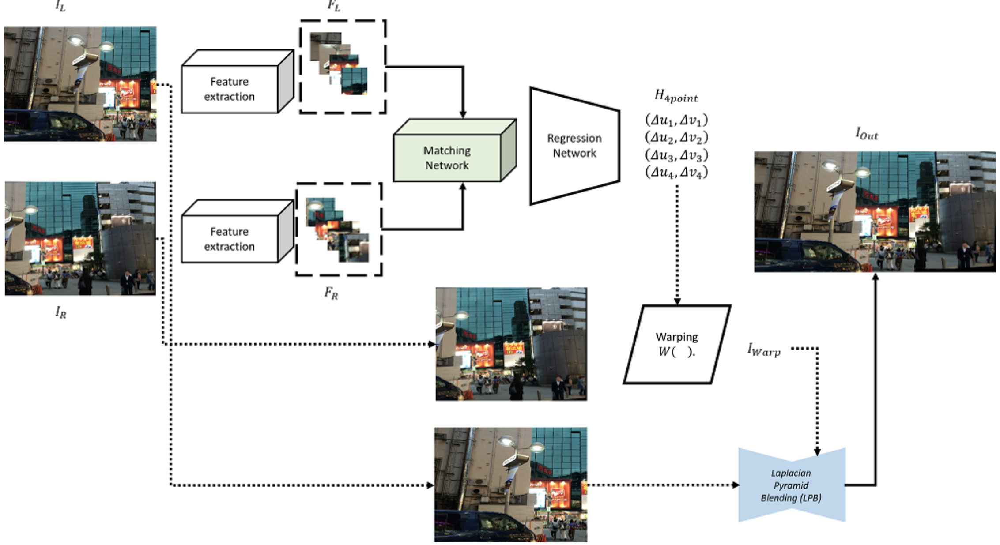
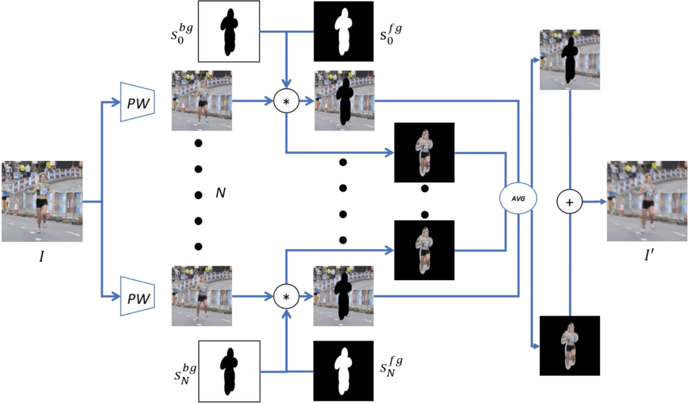
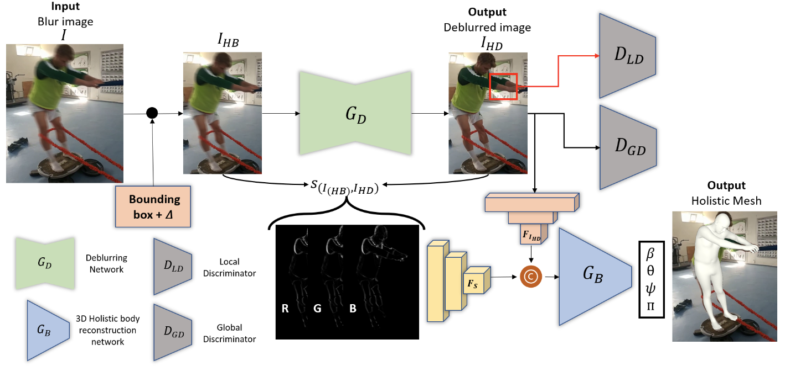
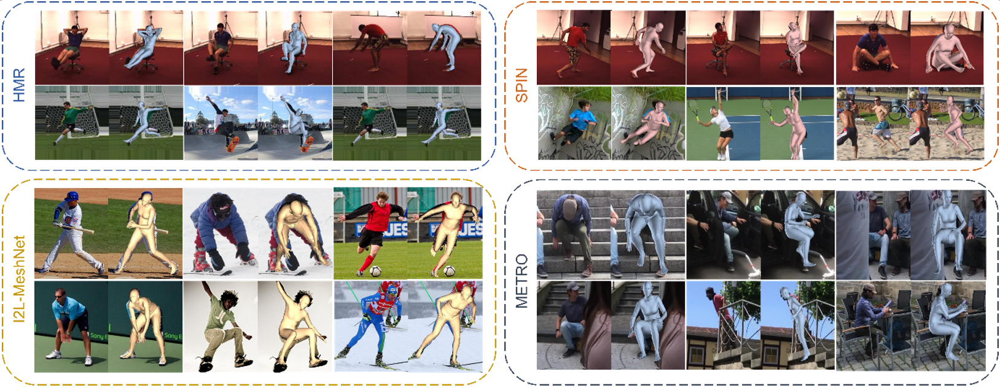

Publications



Convolutional Neural Network을 이용한 휴먼 모션 블러 데이터셋의 생성
Joshua Santoso, Jonathan Samuel Lumentut, and In Kyu Park
In IPIU, 2020
[PDF]

Joint Framework of Human Motion Deblurring and Holistic 3D Body Reconstruction
Joshua Santoso, Williem, and In Kyu Park
In submission, 2021
